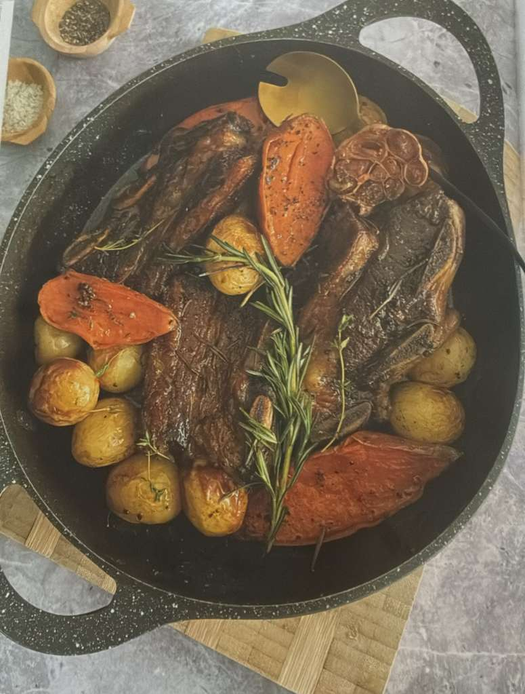
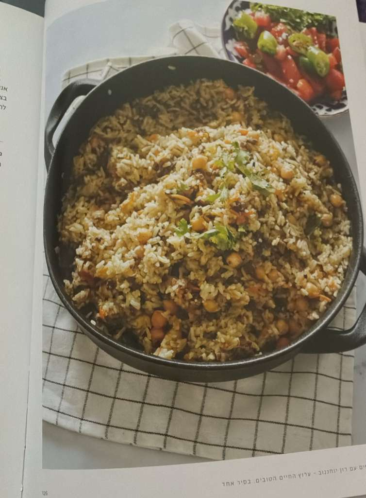
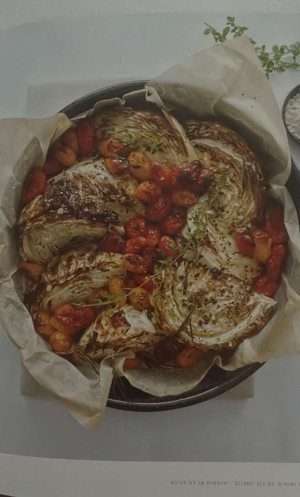

Try Those!
Asado

Rice and Beef

Bukharian Plof (Plov / Osh Palov)
Ingredients:
- 1–2 ladlefuls avocado oil
- 2 medium–large onions, halved and sliced
- 1 Tbsp cumin seeds
- 2 Tbsp ground cumin
- 1 Tbsp garlic powder
- 1 tsp turmeric or hajjiwe spice
- 1 Tbsp ground coriander
- 4–6 carrots, cut into julienne strips
- 1 can chickpeas and ½ cup raisins/craisins, rinsed) optional
- 2 cups of koku Bukharain Chinese rice, or jasmine which I use. washed very well
- 1–2 cups water
- 1 whole garlic bulb
- 1–2 jalapeños or chili peppers (optional, for flavor and garnish)
- Salt & black pepper, to taste
Instructions:
- Heat avocado oil in a heavy-bottomed pot.
- Add onions and sauté until caramelized.
- Add cumin seeds, ground cumin, garlic powder, turmeric (or hawaij ), ground coriander, salt, and pepper.
- Add carrots and cook until softened.
- Stir in chickpeas or raisins/craisins.
- Spread the washed rice evenly over the top — do not mix.
- Pour in 1–2 cups water carefully.
- Place the garlic bulb and jalapeños/chili peppers on top.
- Shape the rice into a dome. After midway Using the back of a spoon, poke a few holes through the dome so the steam can rise evenly.
- Cover tightly and cook on low heat until the rice is tender and the water is absorbed.
To Serve: Traditionally, plof is served alongside a fresh salad and garnished on top with finely chopped greens, such as scallions, for a fresh touch.
Katleti
This is for katleti - replace ground turkey breast with dark ground turkey, instead of 1 egg white use a whole egg. Grate the onion and use 5 ground garlic cloves. Please saute in a pan…you will dry them up in the oven https://www.baba-mail.co.il/recipes/recipe.aspx?recipeid=192
Kasha Varnishkes
For the buckwheat, just leave out the pasta/varnishkes. If you don’t have chicken stock, I would probably just add consomme to the cooking water for the buckwheat https://www.kosher.com/recipe/kasha-varnishkes-10076/
Cabbage and tomatoes

This isn’t specifically Russian, but Russians/Ukranians love cabbage and it is easy to make
For this one, you can even use a deep pan or any other pit, just make sure to cover tightly with parchment paper and aluminum foil Simplest for you would be the asado, buckwheat and cabbage